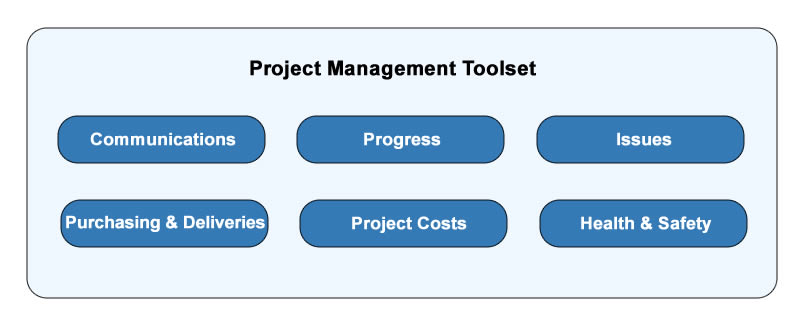

A wide range of relevant tools enable the tracking of all key aspects related to projects. These tools are available both from a centralised dashboard view, and from each individual installation order (or project).
Note
Click on the links above or in the left hand menu links to expand documentation detail and link to it.